Трехмерная графика и моделирование
У меня имеется трехлетний опыт разработки и проектирования уровней для игр, использующих движки GoldSrc и Source, и их улучшенных версий. Данные движки наиболее часто используются непосредственно компанией-разработчиком - Valve. Поэтому наиболее оптимизированная среда разработки для игровых уровней - Valve Hammer Editor, Model Viewer, Face Poser, VTFEdit, pakRAT. С их помощью можно воплотить в реальность свои дизайнерские мысли в следующих играх:
- Counter-Strike: Global Offensive
- Counter-Strike 1.6
- Dota 2
- Team Fortress 2
- Left 4 Dead 2
Галерея
Counter-Strike: Global Offensive
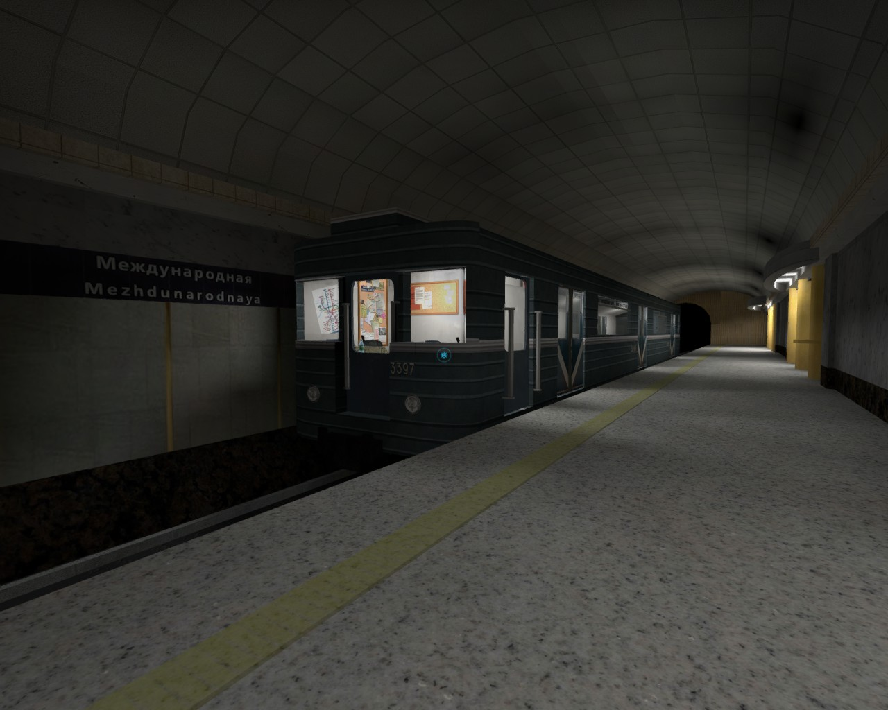 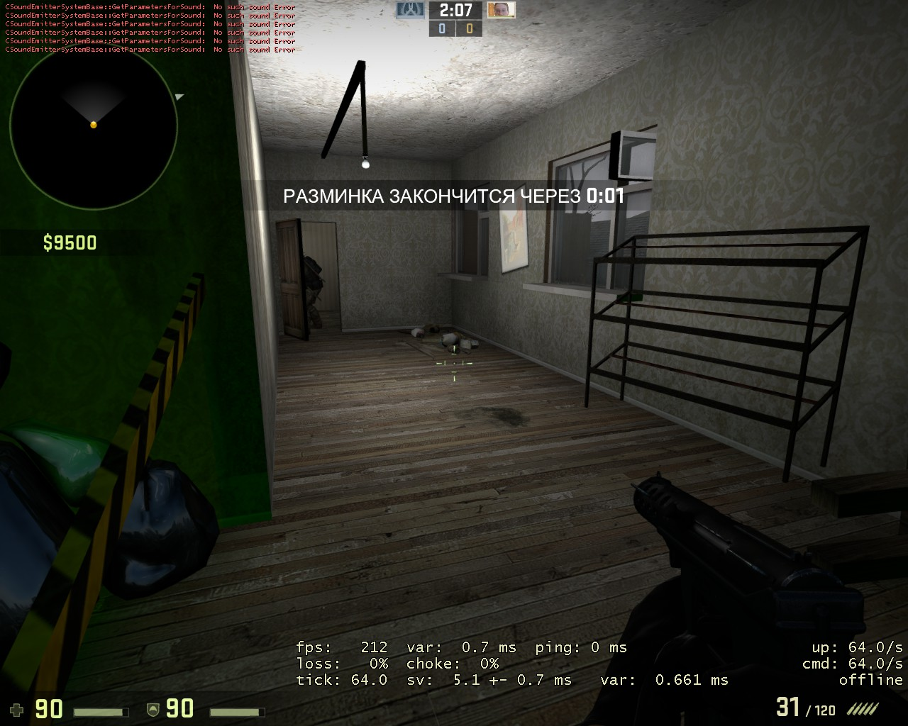 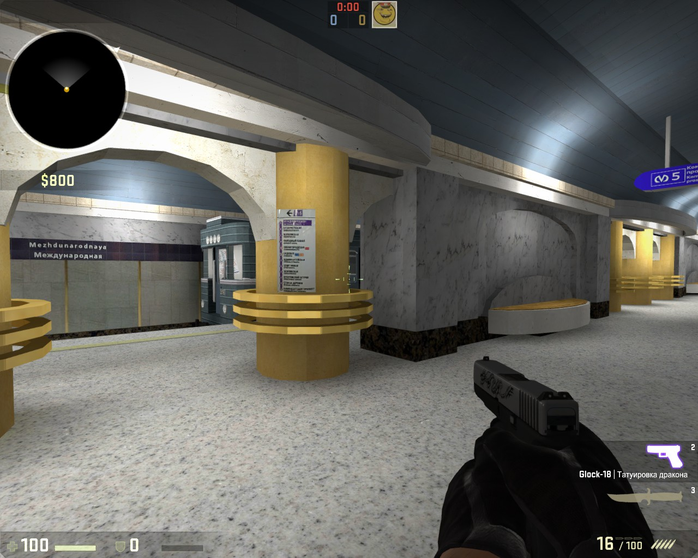 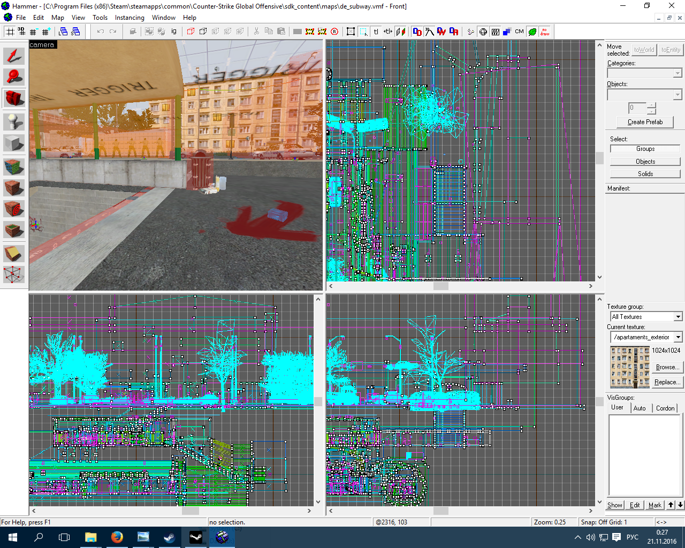
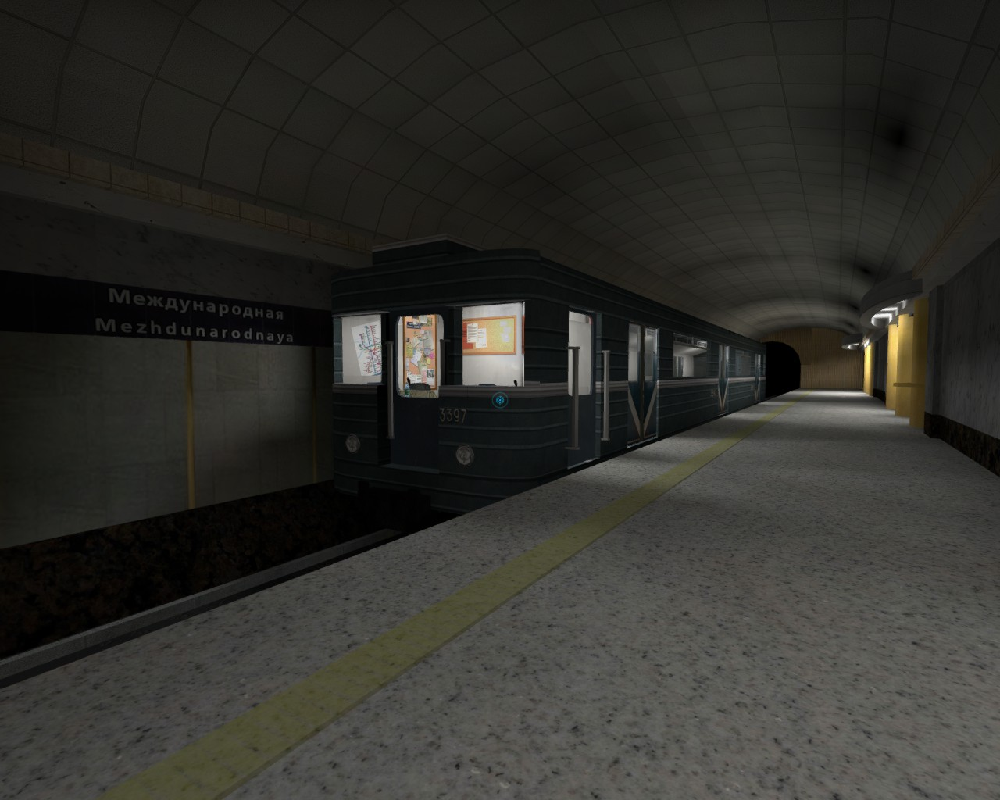 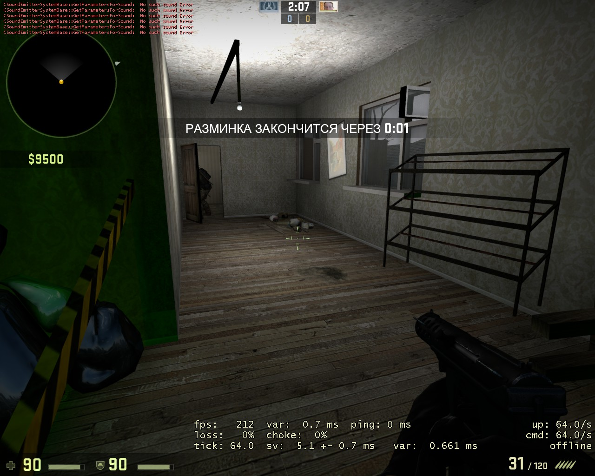 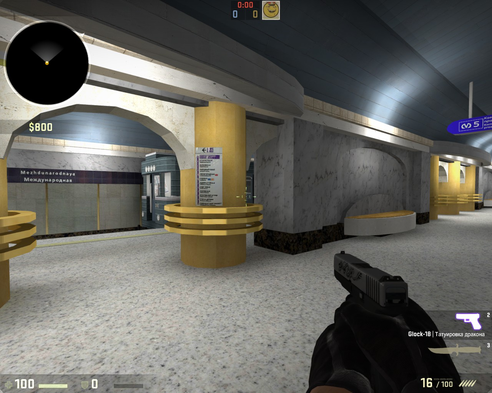 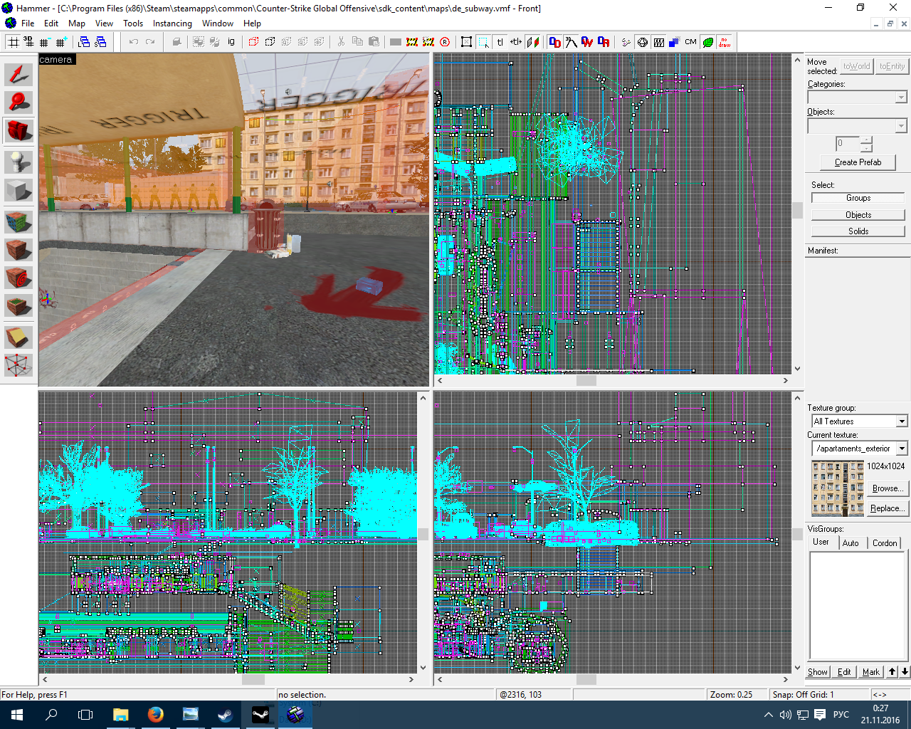
Counter-Strike 1.6
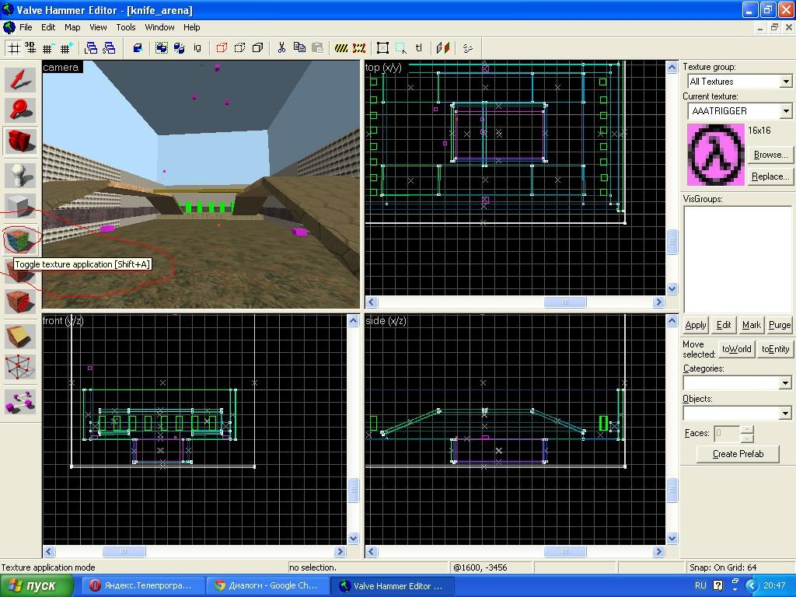 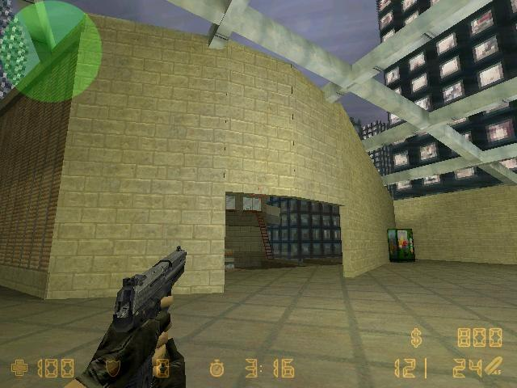
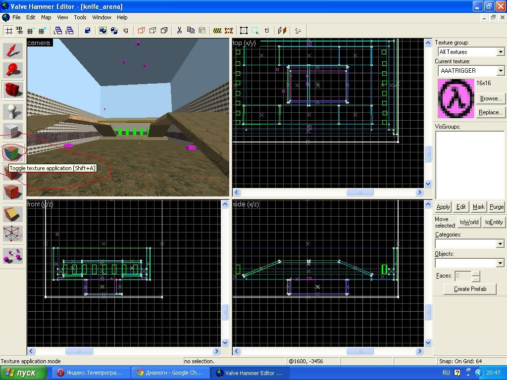 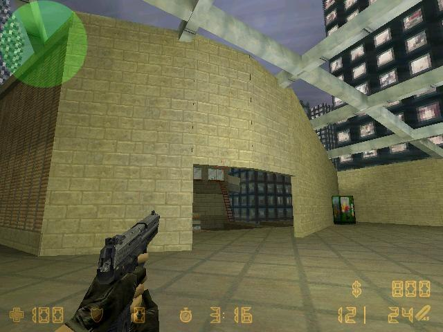